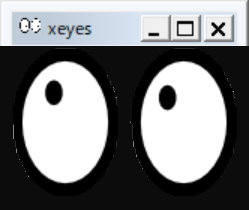

X Window Systemのセットアップ
X Window System、通称「X11」は、Unix系のOS等でGUIを提供するためのシステムだ。MacやWindowsは独自のWindowシステムを持っているが、例えば研究室
ローカルにインストールして利用するのが良いが、とりあえずは研究室サーバに接続して利用することにしよう。そのためにはX Window Systemのインストールが必要だ。ローカルへのインストールが終わったら、研究室サーバへの接続まで確認すること。
X Window Systemのインストール
Windowsの準備
特に設定することはない。動作確認のため、まずUbuntuを起動して動作確認用のxeyesをインストールする。
sudo apt install -y x11-appsインストール後、
xeyesを実行し、以下のような、マウスを追いかける目玉が表示されたら成功だ。

なお、
Error: Can't open display: :0.0などと表示されたら、一度Ubuntuを閉じて、PowerShellを「管理者として実行」し、
wsl --shutdown
wsl --updateを実行してからUbuntuを起動すると直る場合がある。
Macの場合
まず、XQuartzをインストールする。https://www.xquartz.org/から、最新版のXQuartz(2022年10月18日時点ではXQuartz-2.8.2.dmg)をダウンロードし、dmgファイルを開いてXQuartz.pkgを実行してインストールする。実行後にログアウトが要求された場合は、一度ログアウトすること。
XQuartzを起動する。Finderから「アプリケーション」→「ユーティリティ」で開くか、Cmd+SpaceのSpotlight検索から「XQuartz」を探して実行する。
にインストールされるので起動する。「xterm」というウィンドウが開けばインストールできてる。実行できなければ、一度ログアウトしてログインしなおし、再度XQuartzを実行すること。
XQuartzの実行中にターミナル(xtermでなくても良い)で
xeyesを実行せよ。以下のような、マウスを追いかける目玉が表示されたら成功だ。
X Window Systemは、リモートのGUIをローカルで実行することができる(リモートデスクトップのようなもの)。X Window Systemが起動した状態で、研究室サーバにsshで接続せよ。
ssh username@servername -AY最後に大文字で-AYと付けるのを忘れないこと。ログインしたらxeyesを実行しよう。
xeyes目玉が出てきたら成功だ。